The Ultimate Guide to Designing a Wabi-Sabi Living Room
Discover how to embrace the wabi-sabi aesthetic in your living room. A complete guide to finding beauty in imperfection, natural textures, and minimalist design.
Have you ever walked into a room that felt incredibly expensive, yet entirely effortless? It wasn't filled with shiny, mass-produced luxury items. Instead, the furniture looked slightly weathered. The vases were asymmetrical. The colors were muted, almost resembling a quiet, foggy morning.
It felt peaceful. It felt human.
If you are exhausted by the constant pressure to maintain a "perfect," Instagram-ready home where not a single throw pillow is out of place, you are ready for Wabi-Sabi. Wabi-Sabi is not just a design trend; it is an ancient Japanese philosophy. It is the profound appreciation of the imperfect, the impermanent, and the incomplete. In interior design, it translates to spaces that embrace natural aging, raw textures, and a deep sense of authenticity.
In this ultimate guide, we are going to break down exactly how to transform your sterile, cookie-cutter living room into a grounded, breathtakingly beautiful Wabi-Sabi sanctuary.
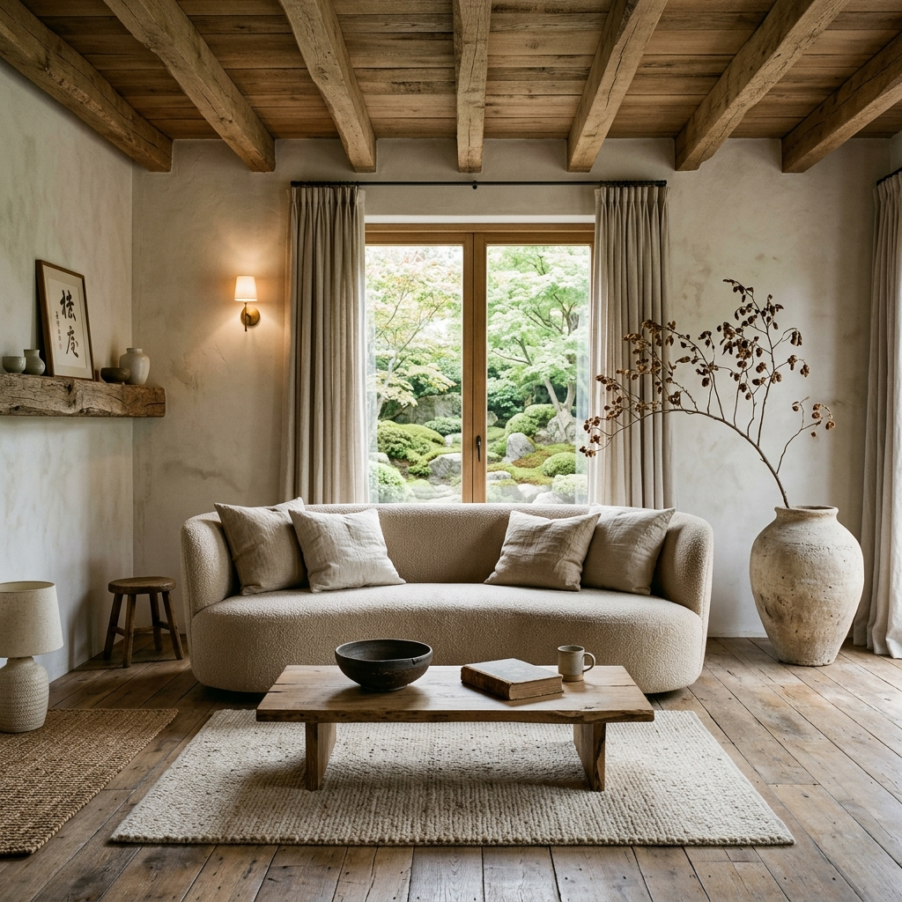
What is the Wabi-Sabi Aesthetic?
Before you buy a single piece of furniture, you need to understand the mindset. Modern western design often chases perfection—symmetry, glossy finishes, and pristine condition. Wabi-Sabi does the exact opposite.
If a ceramic bowl has a chip, Wabi-Sabi says the chip makes it more beautiful because it tells a story. If a wooden table has a knot or a crack, it is celebrated, not hidden. When applied to a living room, a Wabi-Sabi aesthetic relies on three core pillars:
- Asymmetry: Avoiding perfectly matched sets of furniture.
- Raw Materials: Using wood, stone, linen, and clay in their most natural states.
- Simplicity: Removing visual clutter so the few objects you do have can breathe.
Step 1: The Color Palette (Colors of the Earth)
You will not find stark, hospital whites or neon brights in a Wabi-Sabi home. The color palette is deeply rooted in nature. You want colors that look like they were pulled directly from soil, stone, and dried vegetation.
Start with warm, muddy neutrals like plaster, taupe, mushroom, and soft beige. Bring in depth with olive greens, faded terracotta, muted rust, and charcoal grey.
Action Step: If your walls are currently painted a bright, cool-toned white, consider repainting them with a warm wash or applying a Roman clay treatment to give them a slightly mottled, textured, "lived-in" look.
Step 2: Grounding the Space with Natural Textures
In a minimalist room, because you have fewer items, the texture of those items becomes the star of the show. If everything is smooth and flat, the room looks cheap. You need tactile friction.
The easiest way to introduce massive texture is through your flooring. Layering a large, natural fiber rug instantly grounds the seating area and adds an earthy, organic element that feels incredible underfoot.
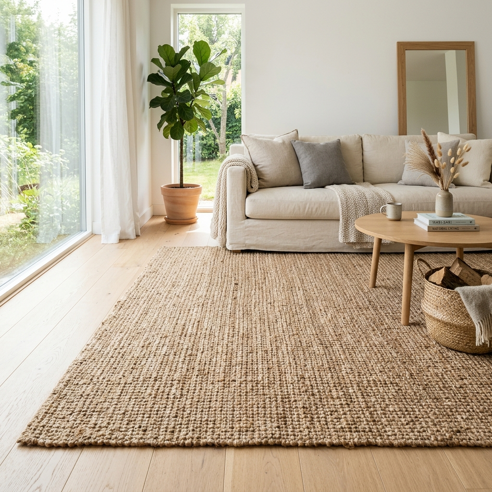
Recommended: Large Jute or Sisal Area Rug
Step 3: Low-Profile, Curved Seating
Traditional western living rooms feature tall, boxy sofas that dominate the room. A Wabi-Sabi living room pulls inspiration from traditional Japanese homes, keeping furniture low to the ground. This makes the ceilings feel higher and the room feel more expansive.
You also want to avoid sharp, aggressive angles. Look for seating with soft, organic curves that invite you to sink in. Upholstery should be matte and tactile—think heavy linen or the incredibly cozy boucle fabric.
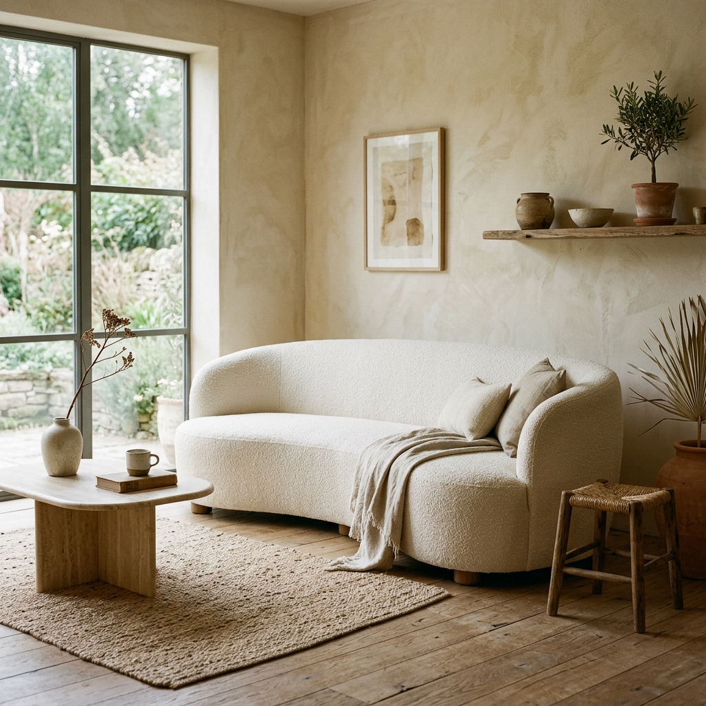
Recommended: Low Profile Curved Boucle Sofa
Step 4: Embracing Raw, Weathered Wood
This is where the magic happens. Do not buy a matching, factory-perfect coffee table set. You want wood that looks like it has a history. Look for pieces made from reclaimed wood, or wood that features visible grain, knots, and slight color variations.
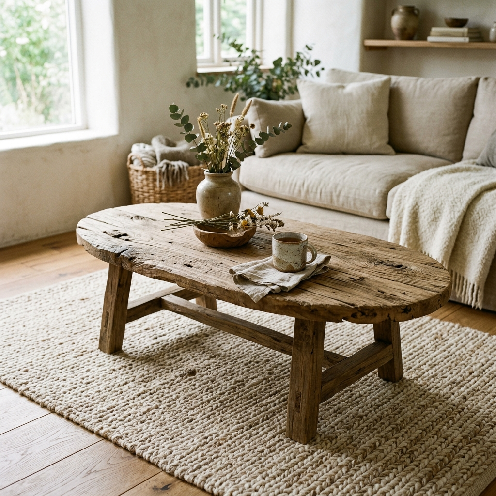
Recommended: Reclaimed Wood Oval Coffee Table
If you need extra seating or a place to rest a cup of tea, skip the sleek metal side tables. Opt for a heavily textured, rustic wooden stool. It functions as both furniture and sculpture.
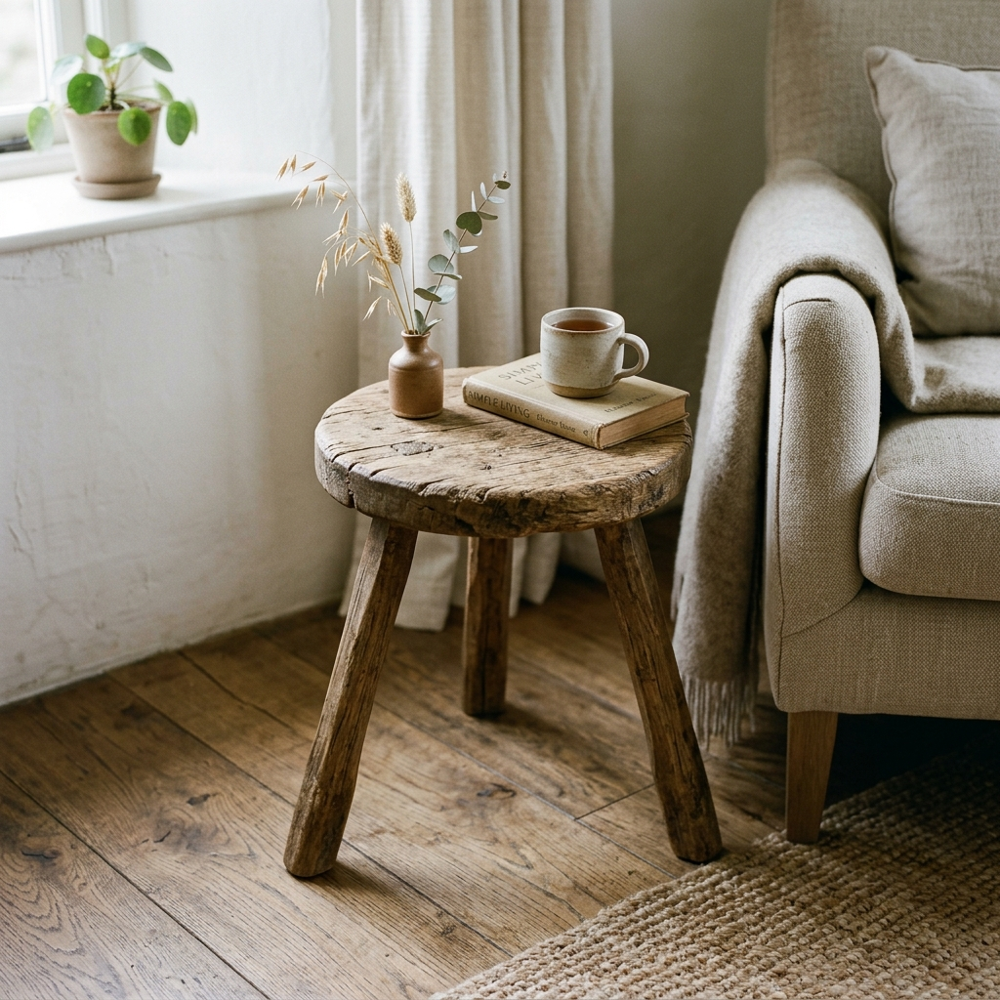
Recommended: Rustic Wooden Stool or Side Table
Step 5: Softening with Imperfect Textiles
Your textiles are the easiest way to inject Wabi-Sabi into a room without spending a fortune. The rule here is: Wrinkles are welcome.
Avoid stiff, perfectly ironed fabrics with loud prints. Instead, opt for 100% washed linen or raw cotton in solid, earthy tones. When you toss a linen pillow onto the sofa, let it look slightly rumpled. It screams "someone lives here and is comfortable."
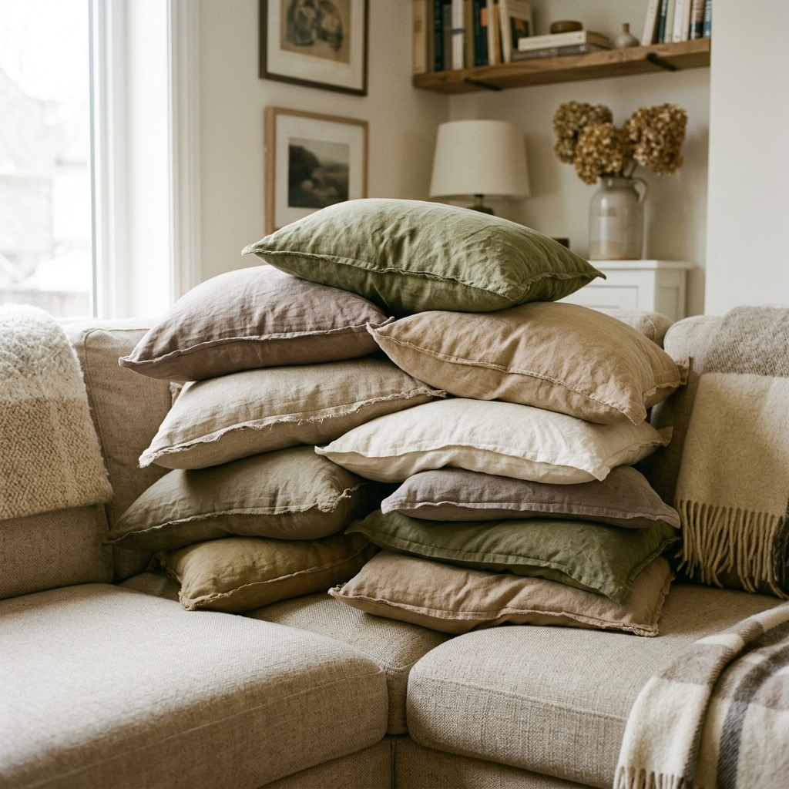
Recommended: Washed Linen Throw Pillow Covers (Neutral Set)
Step 6: The Art of Lighting
Harsh overhead lighting instantly kills the peaceful vibe of a Wabi-Sabi room. You want light that feels like a glowing sunset. The absolute pinnacle of Wabi-Sabi lighting design is the paper lantern, which diffuses light softly while adding delicate organic texture.
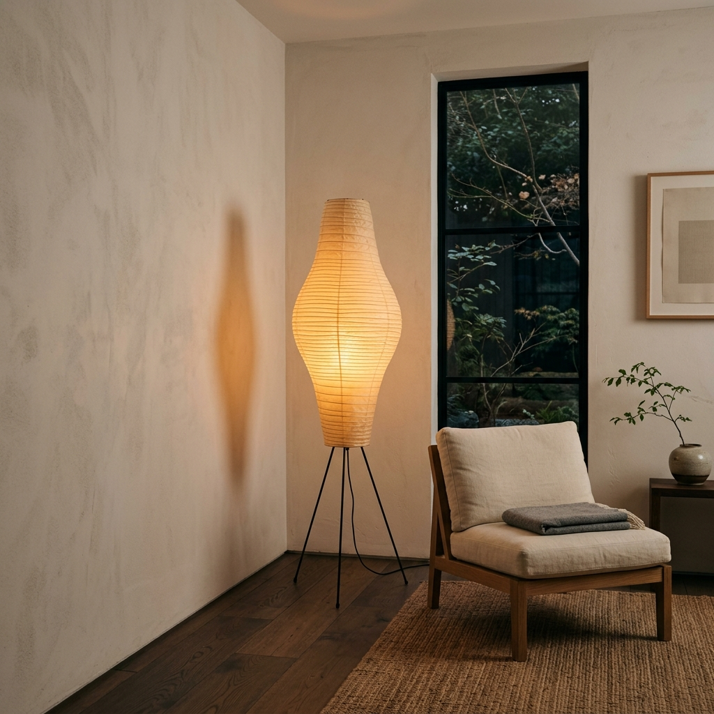
Recommended: Japanese Paper Lantern Floor Lamp
And no peaceful sanctuary is complete without candlelight. Skip the synthetic jar candles and choose raw, hand-poured beeswax pillar candles that melt organically over time.
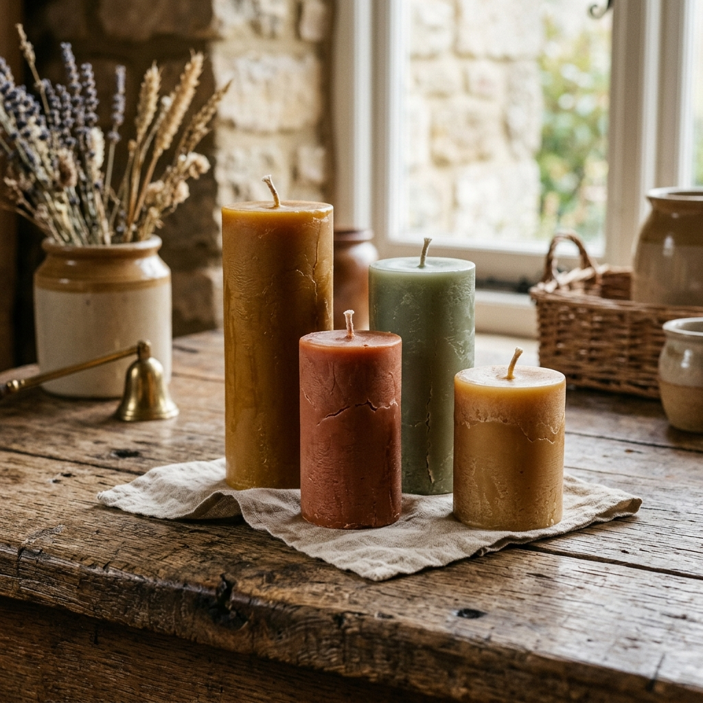
Recommended: Hand-Poured Beeswax Pillar Candles Set
Step 7: Curating Wabi-Sabi Decor
In a Wabi-Sabi living room, less is absolutely more. Every piece of decor should look handmade, slightly irregular, and intentional.
The Statement Vessel
You don't need a shelf full of trinkets. You just need one or two stunning, oversized vessels. Look for unglazed ceramics with a matte, slightly rough finish and an imperfect shape.
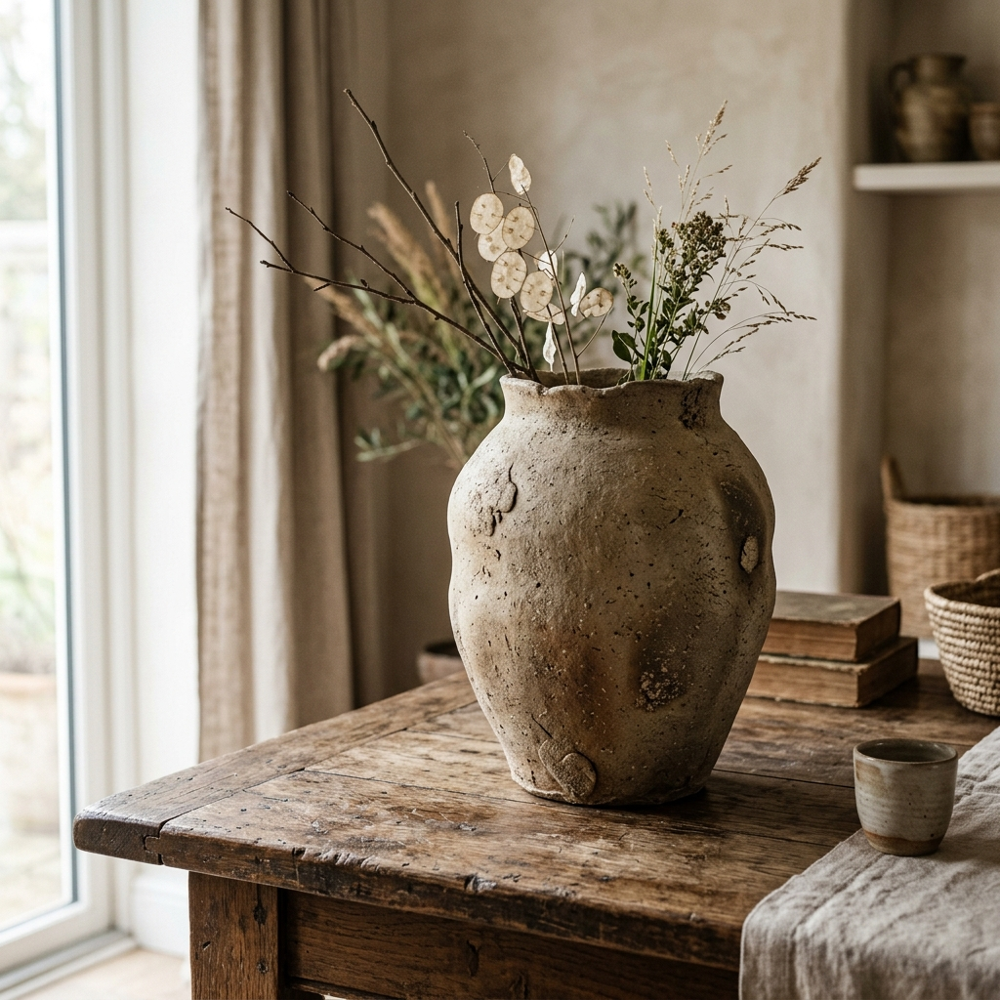
Recommended: Unglazed Ceramic Wabi Sabi Vase Large
Bringing the Outside In
Wabi-Sabi celebrates the entire life cycle of nature, including decay. A few tall, sweeping branches of dried olive leaves or fluffy pampas grass add height and a beautiful, melancholy elegance.
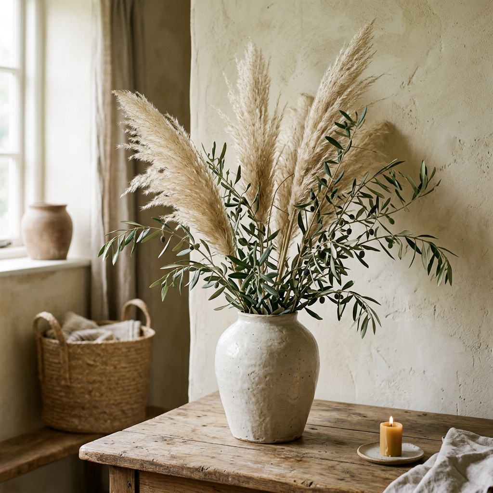
Recommended: Tall Dried Pampas Grass or Olive Branches
Wall Art
Your walls should not be cluttered. Look for pieces that echo the textures of the room, like heavily textured plaster art or muted abstract canvases.
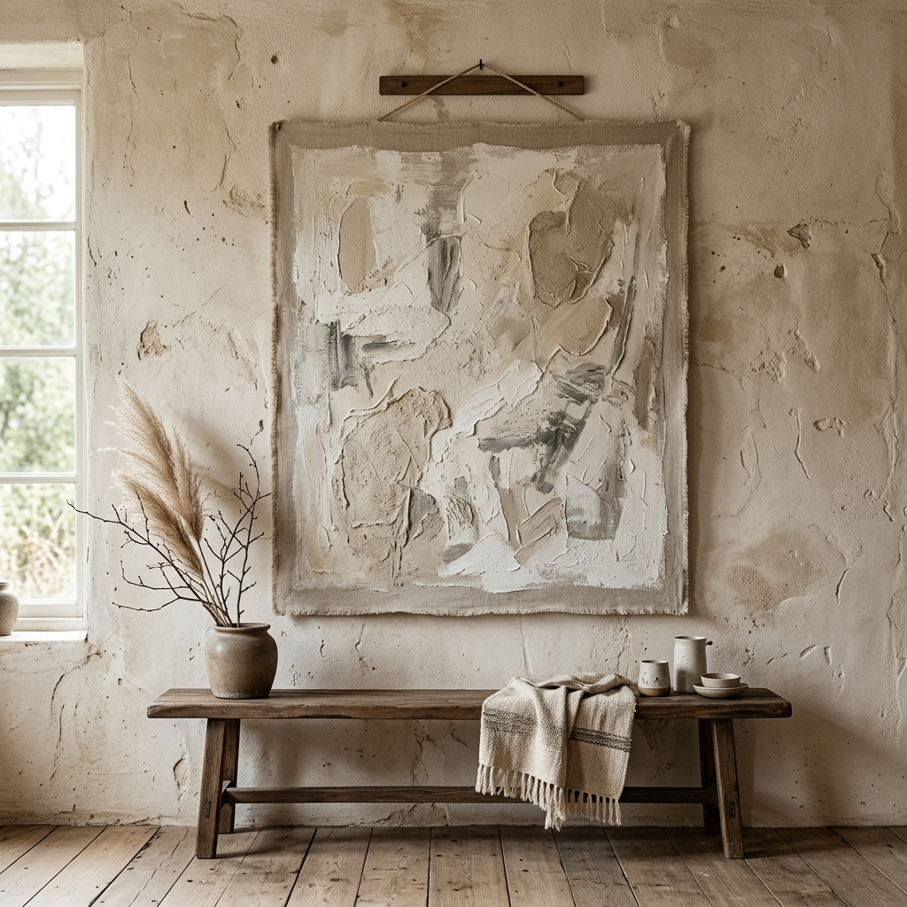
Recommended: Textured Abstract Wall Art Neutral
The Wabi-Sabi Mindset Checklist
As you put your living room together, ask yourself these questions:
- Does this look machine-made or handmade? Always lean toward handmade.
- Does this item need to be here? If it doesn't serve a functional purpose or bring you profound joy, remove it.
- Am I trying to make it look "perfect"? Stop adjusting. Let the blanket drape messily. Let the books stack unevenly.
Final Thoughts: A Home, Not a Museum
Designing a Wabi-Sabi living room is ultimately an act of rebellion against the modern obsession with perfection. It is a daily reminder that nothing lasts, nothing is finished, and nothing is perfect—and that is exactly what makes life beautiful. When you sit on your low-profile sofa, surrounded by raw wood, soft linen, and the warm glow of a paper lantern, you won't just be in a stylish room. You will be in a true sanctuary.